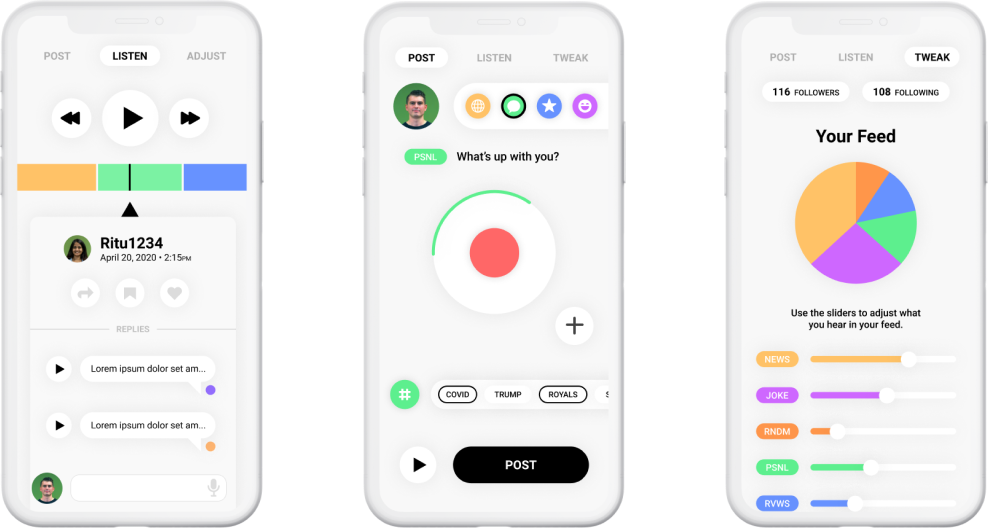
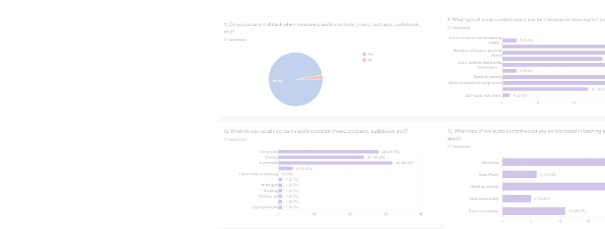

Oddio: A new audio-based social network with an endless feed
My Role
Experience Designer
Research | Prototype | Video Production
Timeline
10 weeks | 2020
Team
Kyle Barron, Dennis Check, Rituparna Roy, Natalie Schade, Michael Silvestre
Though screen fatigue has been a rising problem, people still want to connect with their families and friends on social media. Research shows that online radio listening crowd in the US increases 3% each year, while audio-based social media is an underexplored field. What does the future of social media look like?
The Challenge
We are so glued to our screens all day everyday, and we crave for social interaction. Is there a solution that helps solve both the problems together?
The Solution
A new social media platform for bite-sized audio posts.
Oddio provides novel interactions by leveraging hands-free experience and focusing on listening behaviors. In the mean time, we designed speculatively in response to the rise of wireless earbuds and smart home devices.
The Scenarios
Oddio liberates users from screen fatigue, and help them stay connected with their friends at any time
In Commute
Working Out
Doing Chores
Conceptual Feed Model
GUI Interface
Literature Review
Research shows that audio networks has great potential in the existing space.
We conducted a comprehensive literature review of audio social meida focused scholar papers to study the proven values, user interactions, and accessibilities of audio networks.
Online Survey
97.3% of our survey participants say they multitask when listening to audio
Storyboarding & Speed Dating
“I want to interact with my friends through audio threads.”
“I’m afraid of making embarrasing mistakes without visual supplements”
We used storyboards to explore people’s attitudes towards different audio contents and their reactions to several novel interactions, such as gesture control and voice conmmands.
Prototyping & Testing
The Team
Things that I learned from working remote:
~ Over-communication is the key 🔑
~ Be supportive and accountable for each other